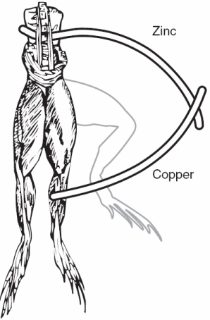
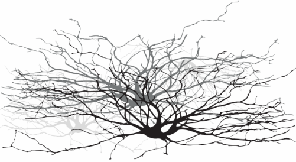
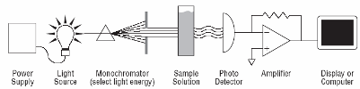
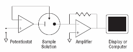
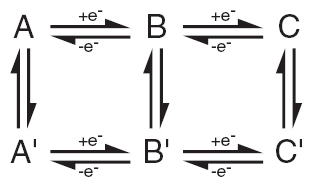
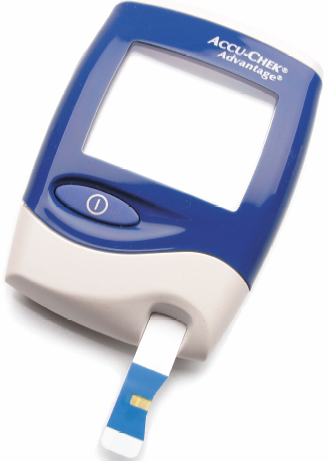
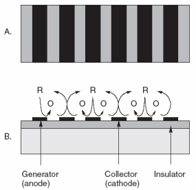

THE PAST, PRESENT, AND FUTURE OF ELECTROANALYTICAL CHEMISTRY
|  |
| Fig. 1. Galvanic cell circa 1786, electrochemistry and electrophysiology began with frogs' legs. |
{kind=link}
|  |
| Fig. 2. Neurons are electrochemical networks. |
{kind=link}
The chemistry profession can be divided into categories based on making something happen and characterizing what happened. Examples of the former would include making a plastic, a lubricant, a drug, a paint, an alloy, an explosion. Examples of the latter include how much, what concentration, how fast, how hot, what pressure, what energy. These questions suggest numerical answers that we call data. Obtaining data about chemical things is the focus of analytical chemistry, just as obtaining data about companies is the job of a Wall Street analyst. Good data is said to be valid and auditable. Otherwise, it is bad data.
If we narrow chemistry down to the more specific (but still very broad) field of electrochemistry, we can look at examples of making something happen:
- isolating bromine from sea water,
- producing aluminum from bauxite,
- generating power with a fuel cell or battery,
- corroding a pipeline, a car, or a bridge,
- using a p-n junction in a semiconductor,
- preparing a flat panel computer display.
We can characterize what happened by answering questions such as these:
- How much glucose is in a drop of blood?
- How fast is a metal oxidized?
- What is the acidity (pH) of a solution?
- How much electrical potential is required to convert one chemical into another?
Answering questions like these is the province of electroanalytical chemistry. They imply the need for measurement tools or electrochemical instruments.
From an analytical chemistry perspective, the best feature of electrochemistry is the direct conversion of chemical information into an electrical signal. There is no need for magnets, light bulbs, lasers, or vacuum pumps. Keep in mind that all matter is electrical, all atoms in molecules have electrons. If we can grab these electrons, their energy can tell us what we are looking at and their number can tell us how much of that is present in a sample under test. Most analytical chemistry instruments use light or magnetism. Light is the easiest to understand for this application. By just looking at a glass of fruit juice, we can get a good idea of what fruit was used (yellow for apple juice, red for cranberry juice) and how much is present (a darker color indicates a greater concentration). We use the eye, but all of this can be done more precisely and automatically using instruments called spectrophotometers coupled to a small computer. A precisely controlled light bulb replaces sunlight and a solid state detector replaces the human eye. Take a look at Figure 3. For analytical electrochemistry, much of this can be simplified as in Figure 4, where there is no light source, and power requirements can be as modest as a cellular telephone battery. Because electrochemistry depends on a surface phenomenon, not an optical path length, the sample volume can be very small.
|  |  |
| Fig. 3. Simple analytical spectroscopy involves monitoring light intensity after it passes through a sample of three dimensions. | Fig. 4. Simple amperometric electrochemical devices monitor current produced in response to an electrical potential applied between an electrode surface and a solution. No bulky light sources or monochromators are required. Electrochemistry is a surface methodology, making it easy to study events in very small volumes. |
{kind=link}
{kind=link}
As we transitioned into the 20th century, there was virtually no concept of "an electroanalytical technique". Some basic ideas were established by Sand and Cottrell, but it was not until Heyrovsky's polarography (the 1959 Chemistry Nobel Prize winner) work in the 1920s that electrochemical analysis could really be taken seriously. On the other hand, the concept of electrochemistry as a means of power generation was very well established by that time. Edison cells were widely used in commerce. It is fair to say that electroanalysis did not really have that much of an impact until after World War II. After the war, the scope of electronics rapidly moved beyond radio and even into chemistry labs. This enabled Faraday's Law, the Nernst equation, and Heyrovsky's "polarograms" to advance beyond curiosities into widespread consideration. We thus might come to the (somewhat imprecise) conclusion that we have had roughly half a century of electroanalytical chemistry as a popular workhorse of analytical chemistry. This includes ion selective electrodes (the pH meter to start), the now classical "electrometric" titrations (potentiometric, amperometric, and coulometric), the notion of a "biosensor," and the concept of voltammetry as a broadly based tool for obtaining data about energetics, kinetics, concentration, and reaction mechanism.
|  |
| Fig. 5. Electrochemists spend a lot of time figuring out mechanisms of chemical reactions coupled to electron transfer steps. The rates and energetics of each step are sought. |
Prior to 1960, electrochemical instrumentation consisted mainly of Wheatstone bridges, light beam galvanometers, motor-driven wire-wound potentiometers, vacuum tube electrometers, and analog panel meters. Even in the 1950s (when radar, rockets, and televisions were well advanced), electrochemists were using burettes and balances not different in concept from those of Faraday. While potentiostats were known to exist before 1960 and the first vacuum tube operational amplifier circuits (analog computers) were applied to electrochemistry in the late 1950s, it was not until the late 1960s that three-electrode instrumentation became common on a global scale. A potentiostat has the purpose of maintaining the potential of an electrode constant ("stat") as the current across the electrode-solution junction varies. This made electrochemical studies in poorly conducting solutions very feasible, greatly expanding the range of analytical electrochemistry in the 1960s.
At that crucial point, progress was accelerated with solid-state operation amplifiers in common use by 1965 and (somewhat fragile) integrated operational amplifiers by 1970. Solid-state pH meters were rare before 1970 and the battery powered CMOS LCD models (available today for under $200.00 US) certainly did not exist at this time. Solid-state pH meters are now available in aquarium stores and some garden shops. These are not laboratory quality instruments, but they are adequate to the task of managing fish or growing vegetables. Computer-based instrumentation followed a rapid progression from Digital Equipment PDP-8s (1960s) to Apple IIs (1970s), to the still evolving "IBM PC�. What is next?
Electrochemical instrumentation, over the last 50 years, has tagged along behind developments in electronics and software intended for military and consumer applications. Economics continues to dictate this because within the already small instrumentation market, electrochemistry is microscopic. The only big time product remains the pH meter. To predict the future, one must look to telecommunications, including the integration of video with computers, worldwide wireless communications, advanced software development tools, and further miniaturization of hardware by great integration of digital and analogue modules. Even now we can use processor-based instrumentation to carry out an array of electrochemical techniques on a given sample. One of the most productive aspects of this approach is the fact that multiple users can employ an electrochemical workstation without interfering with each other. In the past, instruments were rebuilt or re-adjusted for different electrochemical methods. This adjustment is now totally in the hands of software.
|  |
| Fig. 6. An amperometric blood glucose instrument of the type available at pharmacies worldwide (Roche Diagnostics). Only a few microliters (millionth of a liter) of blood are required. |
Rapid digital simulation of electrochemical mechanisms has had an enormous impact on teaching and understanding the chemistry behind (often surprising) complex current voltage curves. The work of Manfred Rudolph in Jena, Germany took a 30-year-old concept and made it practical for every chemist. His electrochemical simulation algorithm is already a leading video game among scientists. It will remarkably assist in the design of real experiments and the explication of previously incomprehensible voltammograms. The relationship of time, space, concentration, current, and potential are all made evident to the experimenter within a few seconds. Yes. Simulation is an artificial representation of a real event, a model of reality based on mathematical rules for basic steps. We have computers simulating battles, football games, space flight, chess games, and electrochemical processes.
|  |
| Fig. 7. Interdigitated arrays of electrodes made with modern lithography techniques have been interesting materials for modern electrochemical studies of redox reactions (A) top view, (B) side view. The reduced form represented by R is oxidized to O at the anodes, while O is recycled to R at the alternating cathodes. There are many applications for such a scheme. |
{kind=link}
As science and technology have progressed since 1800, we inevitably make advances of increasingly narrow significance until individual investigators work on problems and use tools only of interest to themselves. In our instrument business, this becomes a problem for technology transfer in that only a small percentage of academic innovation finds a market of sufficient size. The popular press often accuses academic scientists of pursuing a hobby at the taxpayers' expense. This stings because there is some element of truth to it. An amazing number of articles in the expanding number of journals are read by few beyond the authors. It is difficult to justify this simply on the basis that something great could result when smart people do research. Nevertheless, history tells us that is what happens!
The process of carrying out truly significant advances is not easily controlled or predicted. Scientists and engineers today must work hard to be well read and broadminded in their thinking. Those who know what they do not need to know and learn what they do not need to learn will be the most successful; others will be hopelessly narrow. Humphrey Davy, Michael Faraday, and Walther Nernst (the 1920 Chemistry Nobel Prize winner) should be an inspiration to us. Natural philosophy was their calling and electrochemistry was just a small part of it. Practical and fundamental problems were considered to be one and the same. It is often developments from cross fertilization between diverse fields that are truly significant. Thus, it is foolish to consider electrochemistry as a subject that is independent of biochemistry, solid-state physics, optics, or mathematics. For example, the autofocus 35 mm camera is an electrochemical device, as is the notebook computer and cellular phone. Electrodes are used to relieve pain in dental surgery and to help bone fractures heal in medicine. Over 25 firms have manufactured electrochemical detectors for liquid chromatography. Many of these are used to study how the human brain works.
Galvani did not predict Volta's findings, Volta did not predict Faraday's work, Faraday did not predict Nernst's discoveries, but my prediction is that electroanalytical instrumentation is well in hand now and is waiting for the surface chemistry to come under greater control. Uniformly prepared and hermetically packaged, film electrodes might just give us that disposable electrode that we have always wanted ever since Heyrovsky (the 1959 Chemistry Nobel Prize winner) demonstrated what a clean electrode can do. Owing to the unpredictable non-linear behavior of electrodes under many circumstances, instrumentation and computer algorithms do not often compensate for a "bad" electrode. Is nanotechnology a possible solution? Time will tell.
The following Appendix provides a little more detail. It requires some understanding of chemistry and physics (electricity). It is fair to say that a working knowledge of electroanalytical chemistry absolutely requires some knowledge of voltage, current, and charge.